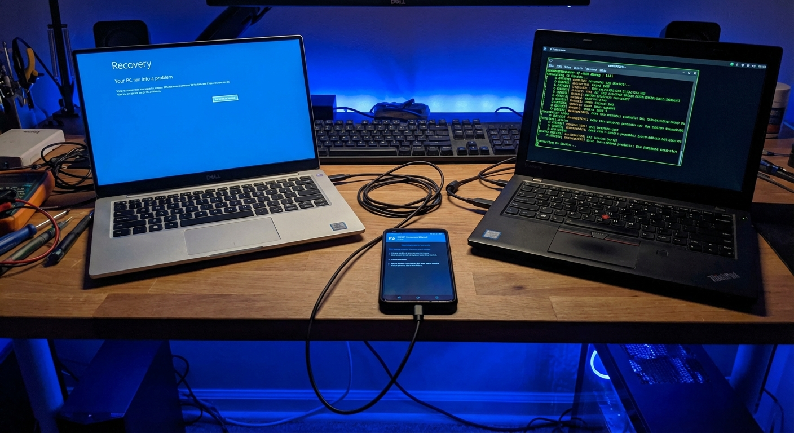
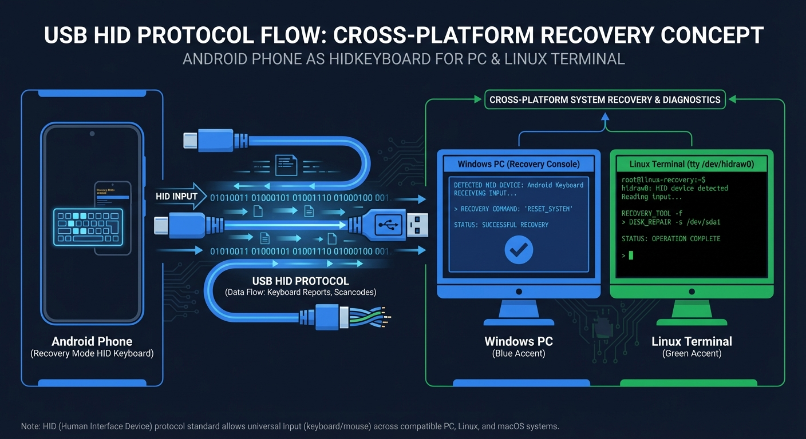

Votre smartphone Android
devient un outil de recuperation
WinRescue transforme votre Android roote en clavier USB virtuel pour reparer, recuperer et administrer n'importe quel PC Windows — sans cle USB bootable.

Tout ce dont vous avez besoin
22 scripts Windows via USB HID + 8 scripts Android via shell root, guides par un wizard interactif.
Windows Recovery
22 scripts pour reinitialiser mots de passe, reparer le boot, recuperer des fichiers, activer le mode sans echec et plus.
Win10 · Win11Android Maintenance
8 scripts pour vider le cache, changer les DNS, desactiver le bloatware, calibrer la batterie et diagnostiquer le systeme.
Shell rootWizard interactif
Guide step-by-step avec images d'aide, preview des commandes, barre de progression et confirmation a chaque etape.
Step-by-stepUSB HID natif
Emule un clavier physique via le protocole HID standard. Fonctionne meme sur l'ecran de login et dans WinRE.
QWERTY · AZERTYDashboard KPI
Vue d'ensemble avec statut root, connexion USB, nombre de scripts par categorie et filtres par OS.
Temps reelBilingue FR/EN
Interface complete en francais et anglais. Detecte automatiquement la langue du systeme ou laisse le choix dans les parametres.
i18nComment ca marche
Trois etapes pour recuperer n'importe quel PC Windows.
Branchez
Connectez votre Android au PC cible via un cable USB-C OTG. WinRescue detecte automatiquement la connexion.
Selectionnez
Choisissez le script adapte a votre situation : reset mot de passe, reparation boot, recuperation fichiers...
Executez
Le wizard vous guide etape par etape. WinRescue envoie les frappes clavier automatiquement au PC.

Scripts disponibles
Reset mot de passe
Reset PIN Windows Hello
Recuperation fichiers
Reinitialisation usine
Creation compte admin
Reparation boot MBR/BCD
Reparation SFC/DISM
Mode sans echec + 15 autres
Vider le cache
Reset WiFi/Bluetooth
Calibrer la batterie
Changer les DNS
Diagnostic systeme
Desactiver bloatware + 2 autres
Pre-requis
Android 8.0+
API 26 minimum. Teste sur Unihertz Titan 2, Google Pixel, OnePlus.
Root (Magisk/KernelSU)
Necessaire pour creer le peripherique USB HID virtuel (/dev/hidg0) via configfs.
Kernel HID
CONFIG_USB_CONFIGFS_F_HID=y compile dans le kernel ou module libcomposite.
Cable USB-C OTG
Cable de donnees (pas charge uniquement). USB-C vers USB-A ou USB-C vers USB-C.
Pret a recuperer ?
Clonez le depot, buildez et installez en quelques minutes.
# Clone
$ git clone https://github.com/ronylicha/winrescue.git
$ cd winrescue
# Build & Install
$ ./gradlew assembleDebug
$ adb install app/build/outputs/apk/debug/app-debug.apk